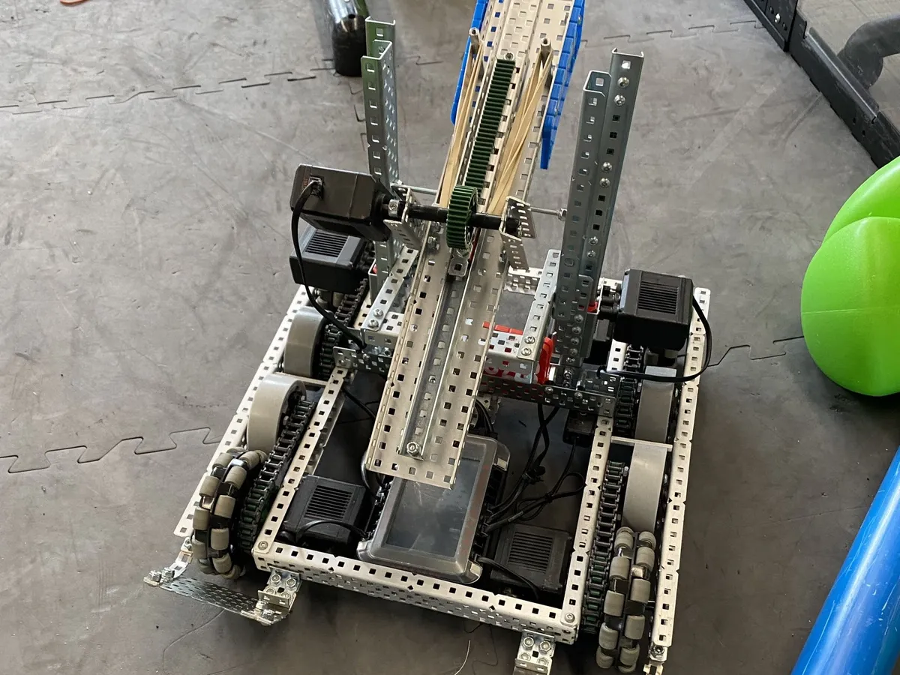
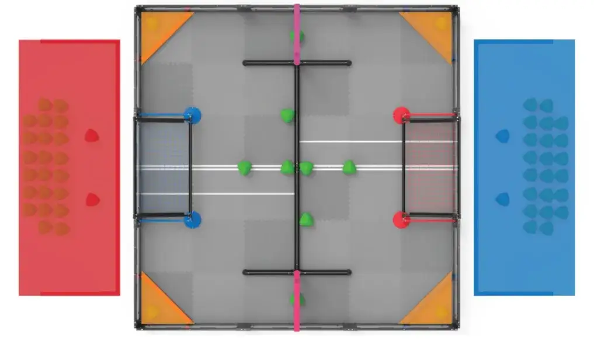
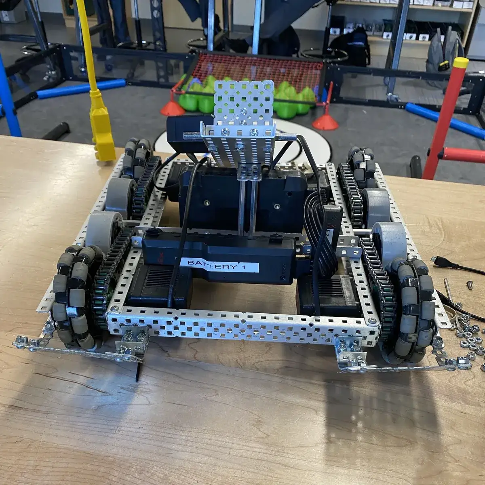
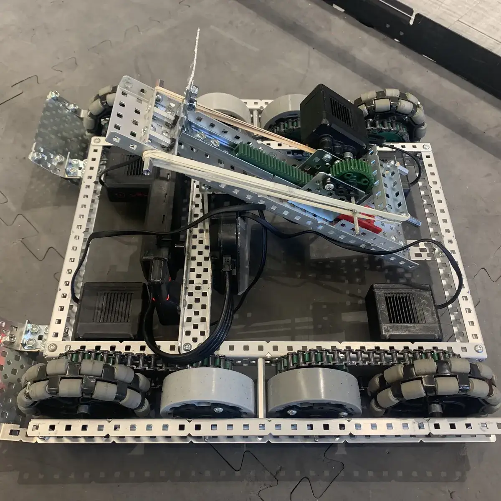
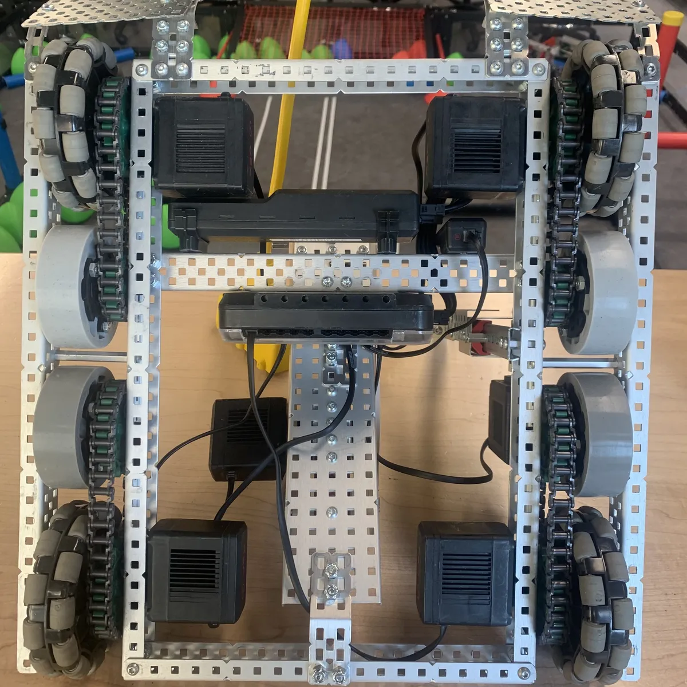

VEX Robotics
A senior-year high school robotics project to design, build, and program a VEX competition robot with a small two-person team, emphasizing drivetrain optimization, rapid testing, and a custom vertical-climbing mechanism.

Project Overview
My VEX Robotics project took place during my senior year of high school. The goal was to design and build a robot for the 2023-2024 high school VEX Robotics competition. The project was completed by me and one other student, and we both contributed to the robot's design. The robot had to fit within the size limit, perform the required game tasks, and be built almost entirely from VEX Robotics parts.
Our team was smaller than most teams, which often had five or more members. We treated the project mainly as a learning opportunity, but still worked to perform well and build a unique, functional robot.

The Game
The 2023-2024 VEX Robotics Competition game, Over Under, is played on a 12' x 12' square field. Each match features two alliances (red and blue) of two teams each, competing in a 15-second autonomous period followed by 1 minute and 45 seconds of driver-controlled play. The main objective is to score green, triangular-shaped plastic scoring objects called "triballs" into goals or alliance offensive zones. A central barrier pipe divides the field, serving as both a mechanical obstacle and a scoring threshold. Teams earn 5 points for each triball inside their goal, and 2 points for each triball in their offensive zone.
At the end of the match, alliances attempt to elevate their robots above the ground using the barrier pipes. Depending on how high a robot climbs relative to the other robots, significant "hang points" are awarded. This elevation phase is often the deciding factor in close matches. Due to our small team size, we had to coordinate our strategy carefully: we built our robot with a low-profile chassis to quickly push triballs under goals, and integrated a robust vertical climb system to ensure high-tier hang points at the buzzer.
Our Design



Our design goals were to launch balls with acceptable speed and accuracy, drive over ground pipes, push balls effectively, handle multiple balls, and eventually climb. For the drivetrain, we used a 4WD system with each main wheel powered by its own motor. Soft middle wheels and front ramps helped the robot drive over pipes without getting stuck.
The climbing mechanism required a major redesign. The final version placed the puncher above the climbing mechanism and directly over the crossbar. This allowed the robot to climb, raise the mechanism to block opposing shots, and lift the launcher above blockers when needed. The climbing mechanism drew a lot of attention because very few robots used a similar approach.
For the launcher, we implemented a puncher system. I did not build that subsystem, so I cannot provide a detailed explanation of its internal operation.
Reflection & Files
This was an incredibly enjoyable project and one of my first major robotics builds. I learned a great deal about time management, design iteration, documentation, unexpected problems, VEX hardware, and the competitive robotics environment. Our robot performed above average despite the small team size, and I am proud of the progress we made.